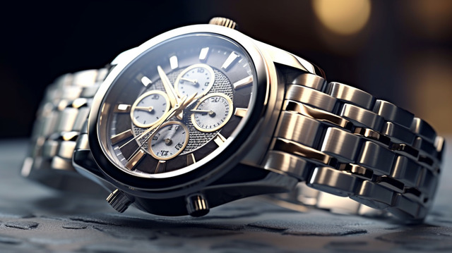

Nos primeiros anos, a Chrono focou em estabelecer sua identidade com uma linha de relógios que celebravam o design clássico. Inspirados pelos grandes mestres relojoeiros do passado, os primeiros modelos da Chrono eram conhecidos por suas caixas refinadas em aço inoxidável e mostradores elegantes, com movimentos suíços de alta precisão. A combinação de qualidade superior e design atemporal ajudou a marca a conquistar um público fiel que apreciava tanto a estética quanto a confiabilidade.
Inovação
Expansão da marca no mercado

Novas Fronteiras:
Em 2028, a Chrono lançou uma coleção de relógios com movimentos híbridos, unindo a precisão dos mecanismos de quartzo com a arte tradicional da relojoaria. Esses modelos introduziram funções avançadas como cronógrafo e múltiplos fusos horários.

ChronoTech:
Em 2032, a Chrono fez uma grande mudança com a linha ChronoTech, que integrou tecnologia smartwatch em designs clássicos. Essa coleção ofereceu conectividade moderna e recursos inteligentes.
Reconhecimento:
linha ChronoTech foi um sucesso estrondoso devido à sua capacidade de combinar funcionalidades inteligentes com uma estética sofisticada. Esse sucesso consolidou a posição da marca como uma inovadora na indústria.

Novos Públicos:
A introdução das funções avançadas e da tecnologia smartwatch ajudou a Chrono a atrair novos públicos, incluindo entusiastas de tecnologia e viajantes frequentes, expandindo assim seu alcance e influência no mercado de relojoaria.